fancy_plots.RmdDefine global plotting parameters, load packages etc.
library(GAMBLR)
library(tidyverse)
library(rmarkdown)
library(knitr)
library(grid)
library(g3viz)
library(maftools)
library(ssh)
#set sample to be plotted
this_sample = "HTMCP-01-06-00422-01A-01D"
#retrieve maf for selected sample
maf = assign_cn_to_ssm(this_sample_id = this_sample,
coding_only = FALSE,
from_flatfile = TRUE,
use_augmented_maf = TRUE)$maf
#get seq data
seq = get_sample_cn_segments(this_sample = this_sample,
multiple_samples = FALSE,
streamlined = FALSE,
from_flatfile = TRUE)
#get gambl metadata
this_meta = get_gambl_metadata(seq_type_filter = "genome")
#subset on all FL cases
all_fl = dplyr::filter(this_meta, pathology == "FL") %>%
dplyr::select(sample_id) %>%
arrange(sample_id) %>%
as.data.frame()
#subset on FL cases we have QC data for
sub_fl = all_fl[c(128:183),]
sub_fl = as.data.frame(sub_fl)
colnames(sub_fl)[1] = "sample_id"
#subset on all BL cases
all_bl = dplyr::filter(this_meta, pathology == "BL") %>%
dplyr::select(sample_id) %>%
arrange(sample_id) %>%
as.data.frame()
#get sample IDs for all available gambl samples
all_samples = dplyr::select(this_meta, sample_id) %>%
arrange(sample_id) %>%
as.data.frame()This vignette explores newly added plotting functions in GAMBLR, directed towards sample-level visualization. These functions are intended to provide a quick and comprehensive overview related to Structural Variants (SV), Copy Number Variation (CNV), Loss Of Heterozygosity (LOH) and intersection of relevant genes/regions. These function follows the following nomenclature fancy_xplot. For more info, see usage examples and parameter descriptions, please view the documentation of GAMBLR.
Interested in how many variants are present in a given sample? A quick way to overview such information would be to call fancy_svbar on a given sample ID. This function returns a bar plot visualizing SVs or SSMs. A variety of sub-setting options are also available. Such as chromosome selection and variant types to be included in plot. In the example bellow, we’re looking at genome-wide SSMs for one selected sample.
fancy_v_count(this_sample_id = this_sample,
maf_data = maf,
ssm = TRUE,
variant_select = c("DEL", "DNP", "INS", "SNP"),
log10_y = TRUE,
snp_colours = c("SNP" = "#2B9971", "DNP" = "#993F2B"),
from_flatfile = TRUE,
use_augmented_maf = TRUE,
plot_subtitle = "grch37",
plot_title = "SSM Count Example",
chr_select = paste0("chr", c(1:22)),
coding_only = FALSE)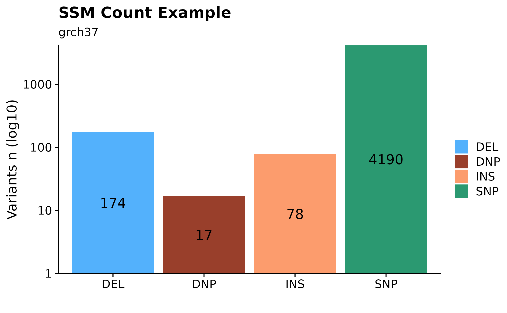
Sometimes it can be useful to overview variant distributions (SSM or SVs) across the complete genomic landscape. To do so, one could call fancy_v_chrcount with sample ID. Optional arguments for sub-setting your data are available (see parameter descriptions for more information). In the following example we’re plotting SV (ssm = FALSE) counts for autosomes. One can also call add_qc_metric to add a second y-axis annotating mean corrected coverage for the selected sample.
fancy_v_chrcount(this_sample_id = "HTMCP-01-06-00422-01A-01D",
plot_subtitle = "grch37",
plot_title = "SV Genomic Distribution Example",
ssm = FALSE,
projection = "grch37",
min_vaf = 0,
chr_select = paste0("chr", c(1:22)),
coding_only = FALSE,
from_flatfile = TRUE,
use_augmented_maf = TRUE)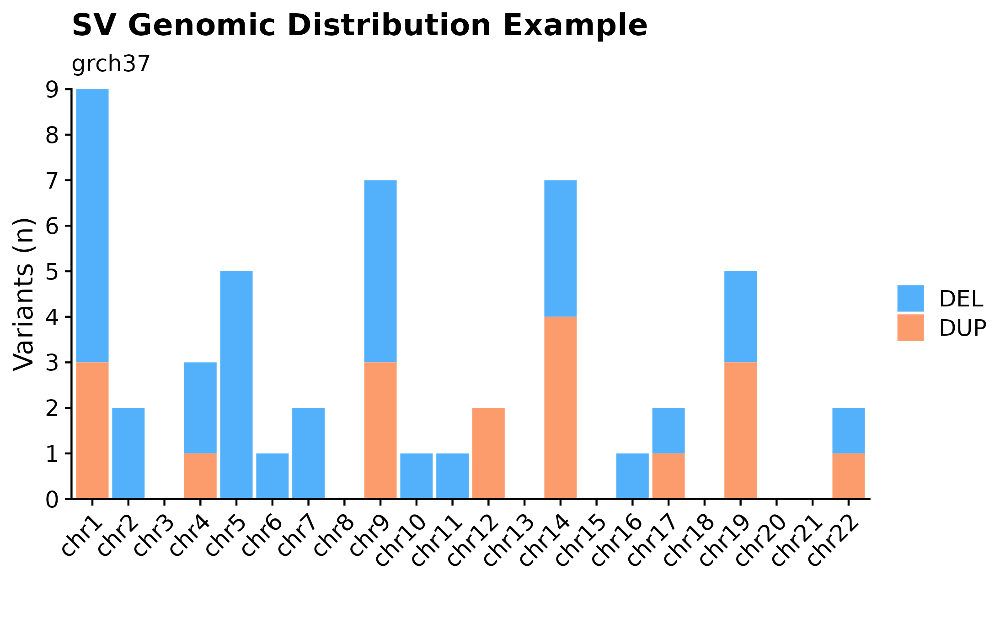
A useful way to visualize variant size distributions is to call fancy_v_sizedis to generate a violin plot showing variant size distributions (sample-level) across selected contigs (per default chr1-22). Optional parameters to sub-set data to include only coding regions are also available for this function, as well as to plot SVs by setting ssm = FALSE.
fancy_v_sizedis(this_sample_id = this_sample,
maf_data = maf,
plot_title = "SV (small variants) Size Distribution Example",
ssm = TRUE,
scale_value = "width",
plot_trim = FALSE,
log_10 = TRUE,
plot_subtitle = "grch37",
chr_select = paste0("chr", c(1:22)),
from_flatfile = TRUE,
use_augmented_maf = TRUE,
coding_only = FALSE)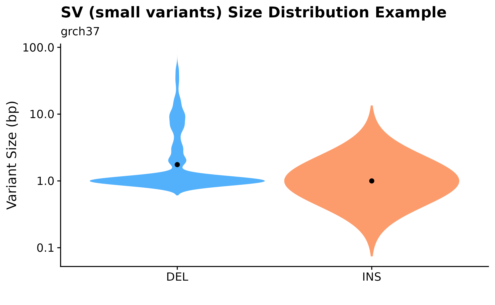
Another useful plotting function for visualizing SV size distributions is fancy_sv_sizedens. In this example, we’re showing SVs (larger 50bp and with a with minimum vaf of 0) size distributions for a specific sample and selected chromosomes.
fancy_sv_sizedens(this_sample_id = this_sample,
vaf_cutoff = 0,
size_cutoff = 50,
chr_select = paste0("chr", c(1:22)),
plot_title = "SV (>50bp) Size Distribution Example",
plot_subtitle = "grch37",
projection = "grch37")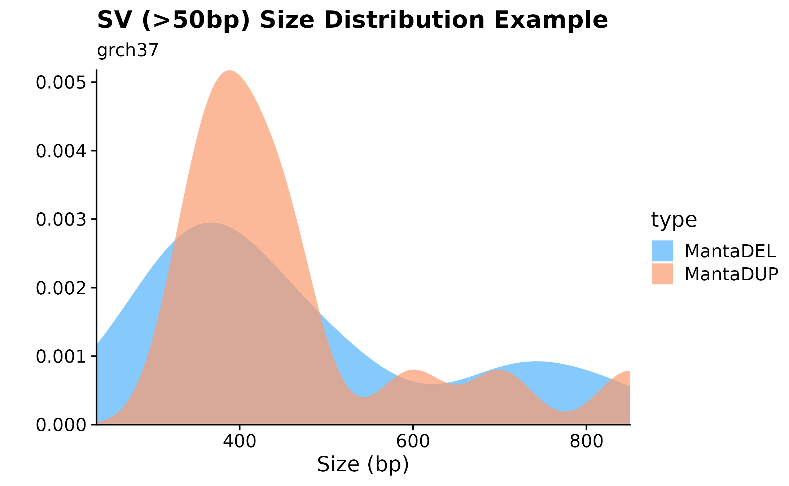
Curious to see how SNVs are distributed across specific chromosomes? For this purpose fancy_snv_chrdistplot was developed. This function takes a sample ID and retrieves SNV information (using assign_cn_to_ssm) and plots variants in an ideogram dependent manner. Similarly to other fanxy_x_plot functions, a selection of parameters are available for data sub-setting and plot customization. For example, by calling the include_dnp, DNP counts will be added to each bar.
fancy_snv_chrdistplot(this_sample_id = this_sample,
maf_data = maf,
plot_subtitle = "SNV Distribution Example",
plot_title = "grch37",
chr_select = paste0("chr", c(1:22)),
include_dnp = FALSE,
from_flatfile = TRUE,
use_augmented_maf = TRUE,
coding_only = FALSE)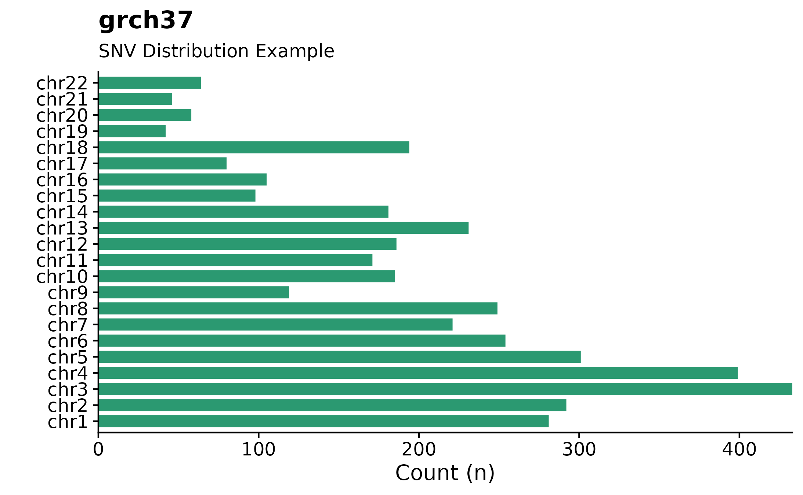
A useful way to visualize copy number information is with the the fancy_cnvbar. This function takes one required parameter (sample ID), calls get_cn_segments and assign_cn_ssm to retrieve data for plotting. The plot highlights the number of CN states for any given sample (left y-axis), together with n bases included in each given CN state (right y-axis).
fancy_cnbar(this_sample_id = this_sample,
seq_data = seq,
plot_title = "CNV Barplot Example",
plot_subtitle = "grch37",
chr_select = paste0("chr", c(1:22)),
include_cn2 = TRUE)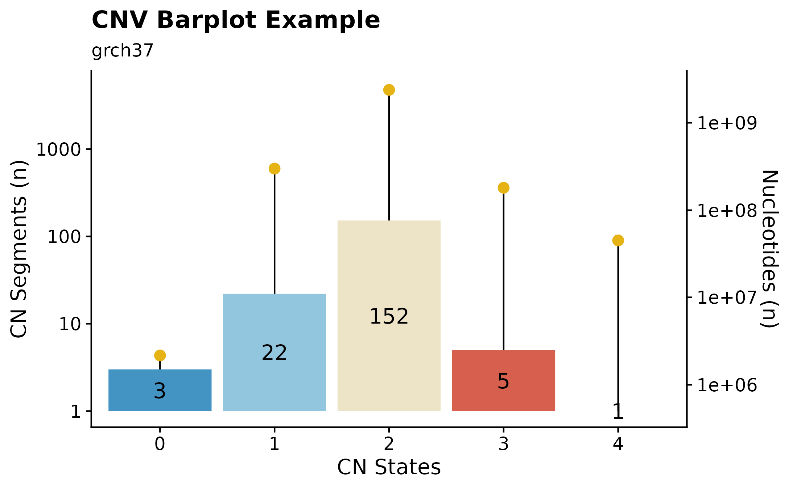
This section explores ideogram plotting functions available withing GAMBLR. Functions are available for both sample-level, as well as on a multi-sample level.
A great way to overview SVs and Copy Number Segments on sample-level is to call fancy_ideogram. This function creates an ideogram based on the chromosomes defined in the chr_select parameter. Copy Number states are plotted along the x-axis (selected contigs plotted vertically on the y-axis). The plot annotates Copy Number States from 0 to 6+. Additional support for superimposing SVs on the ideogram is also possible, by setting include_sv to TRUE, deletions and insertions will be plotted as lollipops. n Number of SVs can also be added for each contig. This is achieved by specifying sv_count to TRUE. In addition, it’s also possible to highlight genomic regions fo interest, such as genes, hotspots, difficult to map regions, etc. For convenience, one can specify a list of genes under the gene_annotation parameter. The function will then implement gene_to_region function to convert gene names to bed-style coordinates.
fancy_ideogram(this_sample_id = this_sample,
gene_annotation = "MYC",
plot_title = "Sample-level Ideogram Example",
plot_subtitle = "grch37")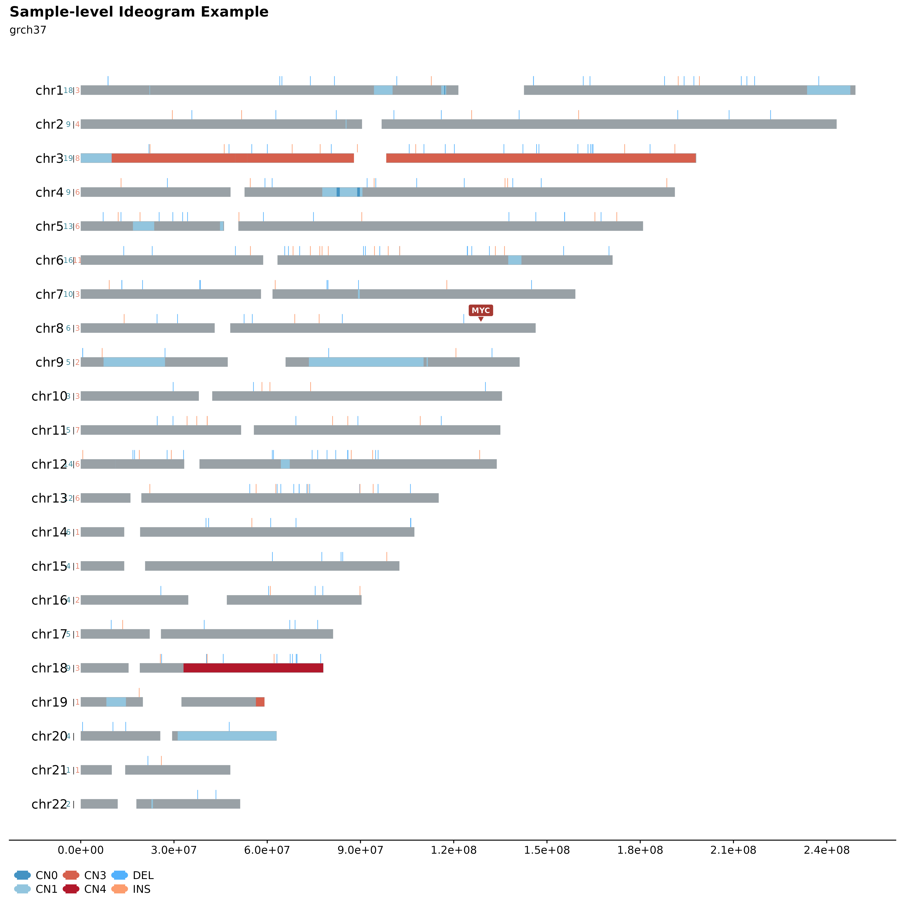
It’s also possible to plot multiple samples (2, 3 or 4) in a similar manner. This can be used to infer inheritance patterns, hotspots, etc. across multiple samples. For this purpose fancy_ideogram_multisamp was developed. This function is called with similar parameters as fancy_ideogram with the addition that this_sample has been replaced with these_sample_ids. The function automatically detects the number of samples provided and sets the plotting parameters accordingly.
#load two samples
two_samples = c("00-15201_tumorA", "00-15201_tumorB")
#build plot
fancy_multisamp_ideogram(these_sample_ids = two_samples,
include_cn2 = TRUE,
plot_title = "Multi-sample Ideograms Example.",
plot_sub = "grch37",
chr_anno_dist = 2.5,
chr_select = paste0("chr", c(1:22)))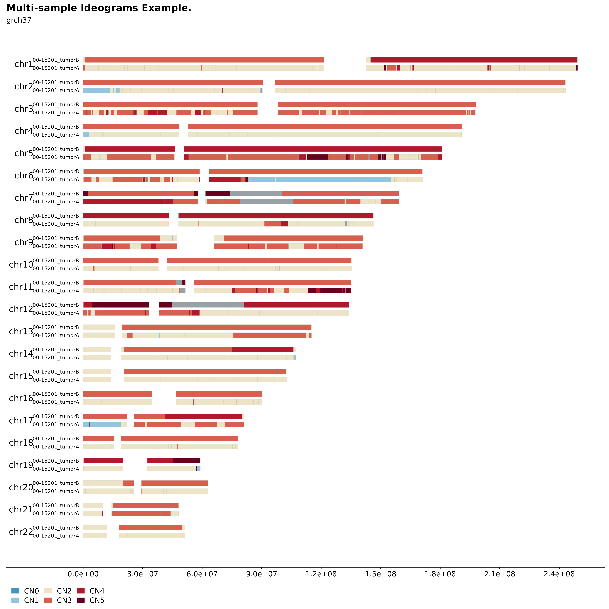
This section explores different ways to visualize QC metrics. All functions in this section calls collate_qc_result to retrieve metrics for the selected samples.
This function takes a list of sample IDs and gathers relevant metrics (alignment) to be plotted. Alternatively, if no df with sample IDs is provided, the function internally calls get_gambl_metadata to get sample IDs. The function also has convenience parameters allowing for easy subset to a specific pathology/cohort. In addition, the function also takes a df with comparison samples (sample IDs) allowing for an easy and straight-forward comparison between selected samples vs any other subset of samples. In this example, we are plotting alignment metrics for all FL samples in the scope of all BL cases.
#build plot
fancy_alignment_plot(these_sample_ids = sub_fl,
comparison_group = all_bl,
add_mean = TRUE,
seq_type = "genome",
plot_sub = "all FL cases (BL comparison group)")## /projects/nhl_meta_analysis_scratch/gambl/results_local/shared/gambl_genome_results.tsv
## /projects/nhl_meta_analysis_scratch/gambl/results_local/shared/gambl_genome_results.tsv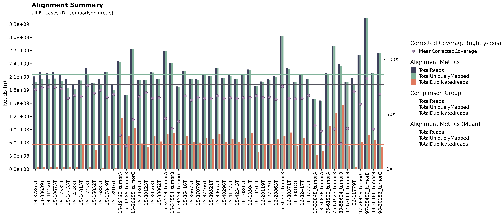
If you are interested in exploring the distribution of a specific QC metric for a set number of sample IDs, fancy_qc_plot is the way to go. This function lets the user specify what metric they want to plot across different sample subsets, flexible comparison group options, as well as grouping the plot by a factor of choice. Unsure what metrics are available for plotting? Just call the function with return_plotdata = TRUE and a list of available metrics will be returned (and nothing else). In this example we are looking at Average Base Quality for FL samples in the “Kridel” cohort, compared to BL samples in the BL pediatric cohort. Each bar in the shown plot represent an individual sample from the defined pathology/cohort, dotted hline is annotating the mean value for selected sample and the solid hline is describing the mean value for the selected comparison group.
#return available metrics for plotting
fancy_qc_plot(return_plotdata = TRUE)## [1] "AverageBaseQuality" "AverageInsertSize"
## [3] "AverageReadLength" "PairsOnDiffCHR"
## [5] "TotalReads" "TotalUniquelyMapped"
## [7] "TotalUnmappedreads" "TotalDuplicatedreads"
## [9] "ProportionReadsDuplicated" "ProportionReadsMapped"
## [11] "MeanCorrectedCoverage" "ProportionCoverage10x"
## [13] "ProportionCoverage30x"
#subset a comparison group
bl_metadata = get_gambl_metadata() %>%
dplyr::filter(pathology == "BL")
#build plot
fancy_qc_plot(keep_pathology = "FL", #pathology filtering criteria for samples to be plotted
keep_cohort = "FL_Kridel", #cohort filtering option, filters samples with FL pathology on the selected cohort.
comparison_samples = bl_metadata, #comparison group
plot_data = "AverageBaseQuality", #metric to be plotted.
fill_by = "pathology", #fill value.
plot_title = "Average Base Quality", #plot title.
y_axis_lab = "Base Quality", #y-axis label.
seq_type = "genome") #seq_type for retrieved data.## /projects/nhl_meta_analysis_scratch/gambl/results_local/shared/gambl_genome_results.tsv
## /projects/nhl_meta_analysis_scratch/gambl/results_local/shared/gambl_genome_results.tsv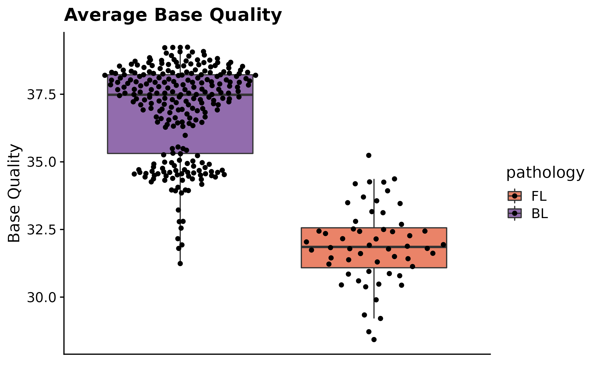
Curious to see what fractions of a specific subset of samples have at least 10X and 30X coverage? For this purpose fancy_propcov_plot was developed. This function outputs a violin plot annotating the percentages of selected samples that have at least 10X and 30X coverage. The plot also allows for a straightforward comparison with another subset of samples. This allows the user to quickly interrogate how the coverage of a set number of samples (from different cohort/pathology) compares to another group of samples. In this example, we’re once again looking at how the coverage compares for all FL cases vs all gambl samples.
#build plot
fancy_propcov_plot(these_sample_ids = sub_fl,
comparison_samples = all_samples,
seq_type = "genome",
plot_subtitle = "Proportional coverage FL samples compared to all gambl samples")## /projects/nhl_meta_analysis_scratch/gambl/results_local/shared/gambl_genome_results.tsv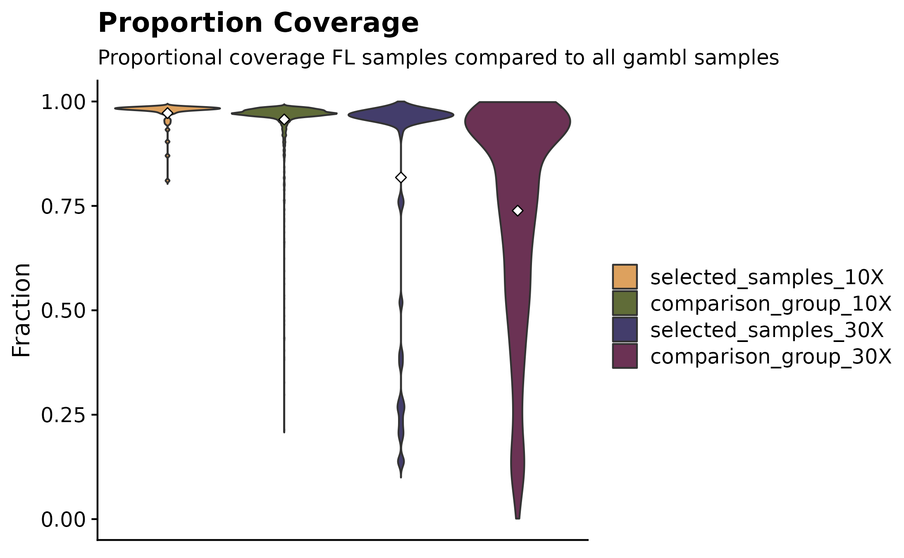
Another way to inspect proportional QC metrics is by calling fancy_proportions_plot. This function gathers all proportional QC metrics and plots them in a grouped bar plot (similarly to fancy_alignment_plot). These metrics include duplicated reads, mapped reads, =>10X coverage reads, and =>30X coverage reads. In this example we are looking at FL samples from the Kridel cohort. This function also annotates the mean values for the plotted metrics.
kridel_fl = get_gambl_metadata() %>%
dplyr::filter(pathology == "FL", cohort == "FL_Kridel") %>%
dplyr::select(sample_id)
fancy_propcov_plot(these_sample_ids = kridel_fl, seq_type = "genome")## /projects/nhl_meta_analysis_scratch/gambl/results_local/shared/gambl_genome_results.tsv